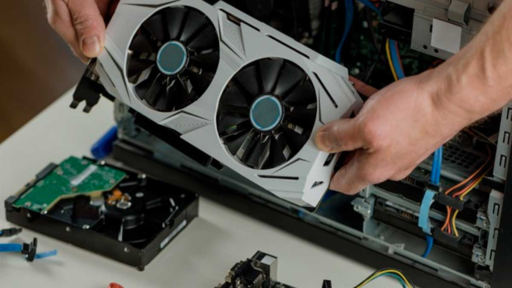

Estudiante
Bienvenido a mi portafolio profesional.
Estudiante de Ingeniería en Sistemas (séptimo semestre) con un perfil híbrido orientado a la infraestructura tecnológica y el desarrollo de software. Poseo experiencia en la ejecución de mantenimiento preventivo y correctivo de hardware, así como en la administración de redes y la gestión de respaldos de información (Backups). Adicionalmente, cuento con competencias prácticas en el desarrollo web Full Stack (Frontend y Backend), destacando la implementación de soluciones con integración y gestión de bases de datos.
Experiencia y Habilidades
- Soporte Técnico: Mantenimiento y limpieza a equipos de cómputo
- Redes y Infraestructura: Administración de respaldos
- Lenguajes: HTML5, CSS3, JavaScript y Python
- Bases de datos: MySQL Server, SQL Workbench y Oracle SQL
El Mantenimiento es la Clave


Mantenimiento de Tarjeta Gráfica
La limpieza profunda de los componentes internos (como la GPU y disipadores) es vital para evitar la degradación térmica. El polvo acumulado actúa como aislante, provocando que los ventiladores trabajen al máximo sin enfriar eficientemente.
- Cambio de pasta térmica cada 2 años.
- Limpieza de disipadores con aire comprimido.
- Revisión de los ventiladores (coolers).